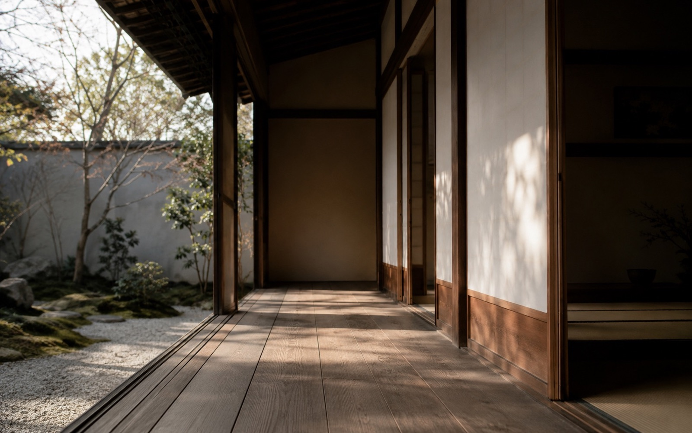

Ma (間) costuma ser explicado como intervalo, espaço ou pausa, mas a tradução literal não dá conta do efeito. Ma é o espaço que permite que uma coisa respire em relação à outra.

Na arquitetura, aparece no vazio entre volumes. Na conversa, no silêncio que evita atropelar o outro. Na música, na pausa que dá sentido ao som. Na convivência, no espaço que impede intimidade forçada.
O risco da romantização
Ma não significa que todo silêncio japonês seja profundo. Às vezes é só constrangimento, cansaço ou hierarquia. O conceito fica mais útil quando ajuda a perceber ritmo e contexto, não quando vira decoração mística.